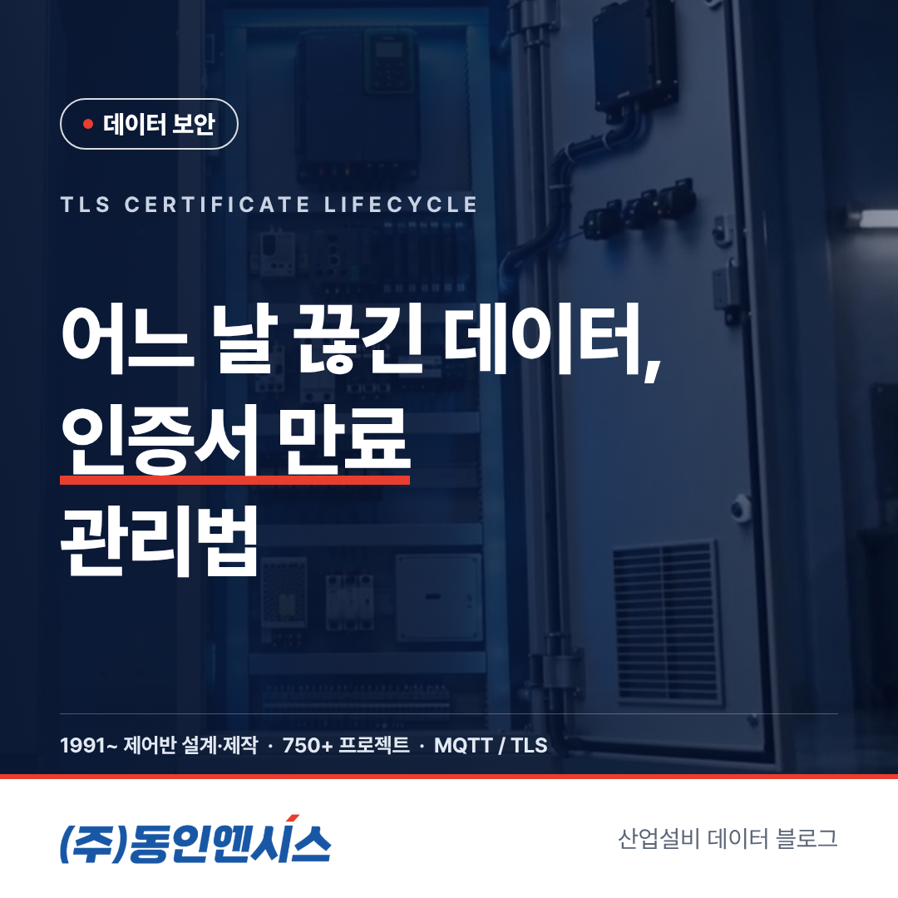
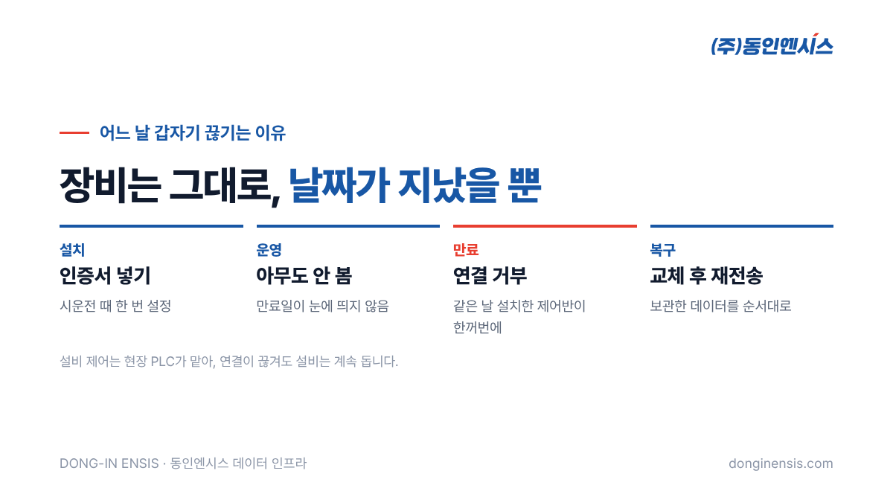
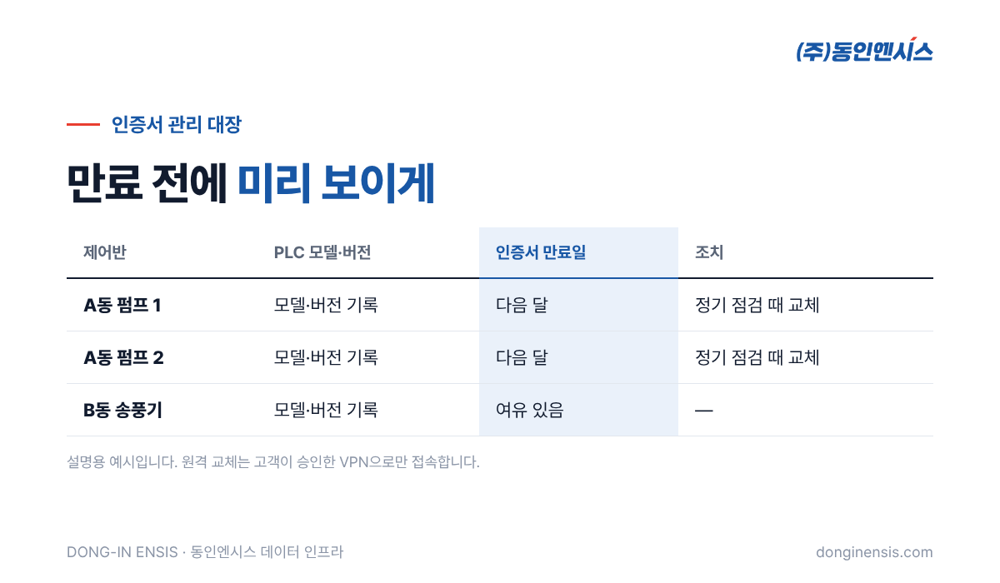

이런 장면을 떠올려 보세요. 월요일 아침, 대시보드의 그래프가 금요일 밤에서 멈춰 있습니다. 제어반도 설비도 멀쩡히 돌고 있고, 네트워크 케이블도 그대로입니다. 한참을 찾아보면 원인이 뜻밖에도 날짜인 경우가 있습니다. 암호화 연결에 쓰는 인증서의 유효기간이 지난 것입니다. 1991년부터 부산에서 산업용 제어반을 설계·제작하며, 이제는 그 제어반에서 나오는 설비 데이터를 서버로 연결하는 일까지 하는 동인엔시스가 TLS 인증서 만료가 왜 생기고, 현장에서는 어떻게 관리하는지 풀어 보겠습니다.
동인엔시스 지능형 제어반은 설비 데이터를 MQTT라는 통신으로 서버에 보내고, 그 길을 TLS로 암호화합니다. 이때 TLS가 하는 일은 크게 두 가지입니다. 오가는 데이터를 남이 읽지 못하게 감싸는 일, 그리고 지금 연결하려는 상대가 진짜 그 서버인지, 진짜 그 제어반인지 확인하는 일입니다.
두 번째 일, 즉 '신분 확인'에 쓰이는 것이 인증서입니다. 사람으로 치면 신분증과 비슷합니다. 누가 발급했는지, 누구의 것인지, 그리고 언제까지 유효한지가 적혀 있습니다.
신분증에 유효기간이 있듯이, 인증서에도 쓸 수 있는 기간이 정해져 있습니다. 기간이 지난 인증서를 내밀면 상대는 연결을 받아 주지 않습니다. 보안 입장에서는 당연한 동작입니다. 오래된 신분증을 계속 믿어 주면, 누군가 그것을 훔쳐 써도 막을 수 없기 때문입니다.
문제는 이 날짜가 사람 눈에 잘 띄지 않는다는 데 있습니다. 설치하고 시운전할 때 한 번 넣어 둔 인증서는 그 뒤로 아무도 들여다보지 않습니다. 그러다 만료일이 오면 아무 경고 없이 연결이 끊긴 것처럼 보입니다. 케이블도, 장비도, 설정도 그대로인데 데이터만 오지 않으니 원인을 찾는 데 시간이 걸립니다.
게다가 같은 날 설치한 제어반이라면 인증서 만료일도 같은 날일 가능성이 큽니다. 한 현장의 제어반 여러 대가 한꺼번에 끊기면 네트워크 장애나 서버 고장부터 의심하게 되고, 정작 TLS 인증서 만료는 맨 마지막에야 떠올리게 됩니다. 증상이 '한꺼번에, 이유 없이'라면 날짜부터 보라는 말이 나오는 이유입니다.

유효기간을 판단하는 기준은 '지금 몇 시인가'입니다. 그래서 장비의 시계가 틀어져 있어도 비슷한 문제가 생길 수 있습니다. 장비 시계가 실제보다 한참 앞서 있으면 아직 유효한 인증서를 만료된 것으로 보고, 한참 뒤처져 있으면 아직 쓸 수 없는 인증서로 봅니다.
정전 뒤에 시계가 초기화되는 장비라면 특히 신경 써야 합니다. 인증서 문제를 살펴볼 때 장비의 시각이 맞는지부터 확인하는 이유입니다. 시각을 자동으로 맞추는 기능이 있다면 켜 두고, 시각 서버에 닿을 수 없는 폐쇄망이라면 점검 때 시계를 함께 확인하는 것이 좋습니다. 시계가 정확해야 데이터에 찍히는 측정 시각도 믿을 수 있으니, 시각 관리는 보안과 데이터 품질 양쪽에 걸친 일입니다.
여기서 먼저 안심할 부분이 있습니다. 인증서가 만료되어 서버와의 연결이 끊겨도 설비 제어는 멈추지 않습니다. 동인엔시스의 구조에서 인터록과 최종 제어는 현장 PLC가 맡고, 서버는 데이터를 받기만 하기 때문입니다.
또 연결이 끊긴 동안의 데이터는 제어반에 보관됩니다. 인증서를 새로 넣어 연결이 살아나면, 보관해 둔 데이터를 오래된 순서대로 자동으로 다시 보냅니다. 그래서 만료로 인한 손실은 '그동안 실시간으로 못 본 것'에 가깝고, 기록 자체는 메울 수 있습니다. 물론 그사이 알람을 원격으로 받지 못했다는 점은 분명한 손해이니, 애초에 끊기지 않게 관리하는 것이 핵심입니다.
동인엔시스는 제어반마다 PLC 모델과 버전, 그리고 인증서 만료일을 대장으로 관리합니다. 현장이 늘고 제어반이 수십 대가 되면, 사람 기억으로는 어느 것이 언제 만료되는지 알 수 없기 때문입니다. 대장이 있으면 '다음 달에 만료되는 제어반'을 미리 뽑아 볼 수 있습니다. PLC 모델과 버전을 함께 적어 두는 것도 이유가 있습니다. 펌웨어나 프로그램을 바꿀 때 어떤 제어반이 영향을 받는지, 인증서 교체 방법이 기종마다 어떻게 다른지를 같은 표에서 바로 확인할 수 있기 때문입니다.
만료일이 다가오는 제어반은 여유를 두고 새 인증서로 바꿉니다. 정기 점검 일정과 묶으면 따로 현장을 찾지 않아도 됩니다. 교체 뒤에는 실제로 데이터가 다시 들어오는지까지 확인해야 마무리입니다.
Photorealistic close-up photo of an office desk in a Korean engineering company: a laptop showing an abstract spreadsheet with colored date cells (no readable text), a desk calendar with a few circled dates (no readable text), a printed equipment list and a pen, soft daylight, shallow depth of field, no brand logos, no readable text. 3:2 landscape.
인증서 교체를 원격으로 할 때도 고객이 승인한 VPN을 통해서만 접속합니다. 보안을 위해 넣은 인증서를 관리하다가 오히려 보안 구멍을 만들면 안 되기 때문입니다.

고객사가 자체 서버를 운영하거나, IT기업이 플랫폼 쪽을 맡는 경우에는 서버 인증서도 함께 봐야 합니다. 제어반 쪽 인증서만 챙기고 서버 인증서를 놓치면 결과는 같습니다. 어느 한쪽의 신분증만 만료돼도 악수는 성사되지 않기 때문입니다. 누가 어느 인증서를 책임지는지 계약이나 협의 단계에서 미리 정해 두면 서로 미루는 일이 없습니다.
Photorealistic photo of a Korean engineer in a navy work jacket standing beside an open light-grey industrial control cabinet with network switch and PLC modules inside, holding a rugged tablet showing an abstract calendar grid and green and red status dots (no readable text), factory background softly blurred, documentary style, no brand logos, no readable text. 3:2 landscape.
Q. TLS 인증서 만료를 막으려면 유효기간을 아주 길게 하면 되지 않나요? 길게 잡으면 교체 횟수는 줄지만, 그만큼 인증서가 유출됐을 때 위험한 기간도 길어집니다. 적당한 기간을 정하고 대장으로 관리하는 쪽이 안전합니다.
Q. 인증서가 만료되면 데이터를 잃나요? 연결이 끊긴 동안의 데이터는 제어반에 보관했다가, 연결이 살아나면 순서대로 다시 보냅니다. 다만 그사이 원격 알람을 받지 못하므로 미리 교체하는 것이 원칙입니다.
Q. 만료된 것인지 어떻게 알 수 있나요? 여러 제어반이 같은 시각에 한꺼번에 끊기고, 케이블과 전원에는 이상이 없다면 TLS 인증서 만료를 먼저 의심해 볼 만합니다. 대장에서 해당 제어반의 만료일을 확인하면 대부분 바로 답이 나옵니다.
Q. 유지관리 계약에 인증서 관리도 들어가나요? 원격 상태 확인과 정기 점검 범위 안에서 함께 챙깁니다. 세부 범위는 프로젝트별로 정합니다.
암호화는 한 번 켜 두면 끝나는 기능이 아니라, 날짜와 함께 관리해야 하는 운영의 일입니다. 인증서 만료일을 대장에 적고, 만료 전에 바꾸고, 바꾼 뒤 확인하는 것. 이 단순한 습관이 어느 날 갑자기 데이터가 끊기는 일을 막아 줍니다.
동인엔시스 051-862-3668 · dongin@donginmne.com
아래 질문 중 하나에 실제 경험으로 답해 본문 적당한 곳에 넣어 주세요. 사람이 직접 쓴 문장이 들어가면 네이버에서 저품질 위험이 줄고 노출에 도움이 됩니다.